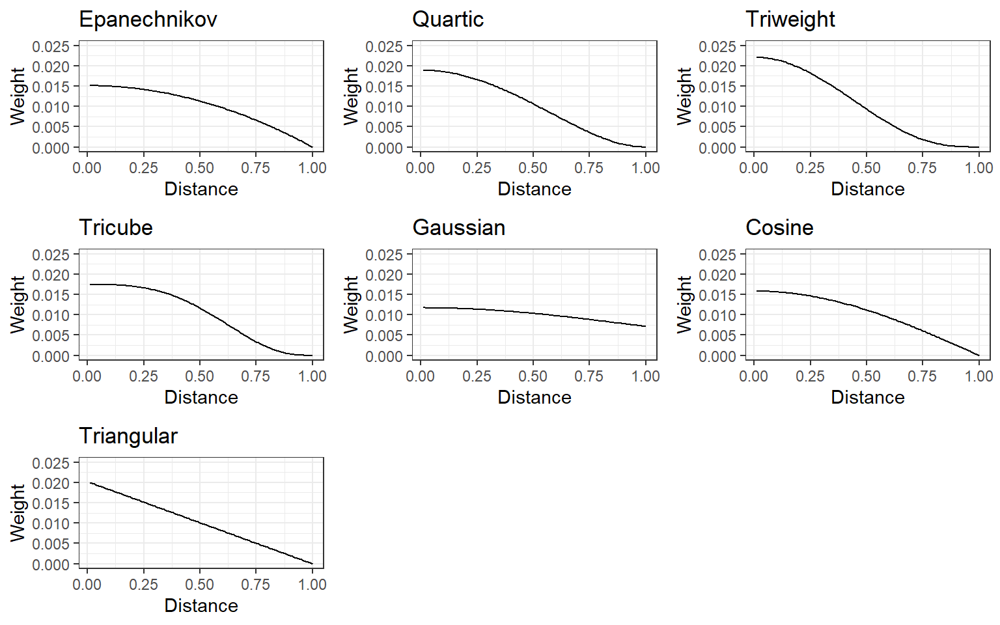

[Updated: Sun, Nov 27, 2022 - 14:07:14 ]
Measuring the distance between two data points is at the core of the K Nearest Neighbors (KNN) algorithm, and it is essential to understand the concept of distance between two vectors.
Imagine that each observation in a dataset lives in a P-dimensional space, where P is the number of predictors.
A general definition of distance between two vectors is the Minkowski Distance. The Minkowski Distance can be defined as
\[\left ( \sum_{i=1}^{P}|A_i-B_i|^q \right )^{\frac{1}{q}},\] where \(q\) can take any positive value.
For simplicity, suppose that we have two observations and three predictors, and we observe the following values for the two observations on these three predictors.
Observation 1: (20,25,30)
Observation 2: (80,90,75)
If we assume that the \(q=1\) for the Minkowski equation above, then we can calculate the distance as the following:
When \(q\) is equal to 1 for the Minkowski equation, it becomes a special case known as Manhattan Distance. Manhattan Distance between these two data points is visualized below.
If we assume that the \(q=2\) for the Minkowski equation above, then we can calculate the distance as the following:
When \(q\) is equal to 2 for the Minkowski equation, it is also a special case known as Euclidian Distance. The euclidian distance between these two data points is visualized below.
Given that there are \(N\) observations in a dataset, a distance between any observation and \(N-1\) remaining observations can be computed using Minkowski distance (with a user-defined choice of \(q\) value). Then, for any given observation, we can rank order the remaining observations based on how close they are to the given observation and then decide the K nearest neighbors (\(K = 1, 2, 3, ..., N-1\)), K observations closest to the given observation based on their distance.
Suppose that there are ten observations measured on three predictor variables (X1, X2, and X3) with the following values.
d <- data.frame(x1 =c(20,25,30,42,10,60,65,55,80,90),
x2 =c(10,15,12,20,45,75,70,80,85,90),
x3 =c(25,30,35,20,40,80,85,90,92,95),
label= c('A','B','C','D','E','F','G','H','I','J'))
d x1 x2 x3 label
1 20 10 25 A
2 25 15 30 B
3 30 12 35 C
4 42 20 20 D
5 10 45 40 E
6 60 75 80 F
7 65 70 85 G
8 55 80 90 H
9 80 85 92 I
10 90 90 95 JGiven that there are ten observations, we can calculate the distance between all 45 pairs of observations (e.g., Euclidian distance).
dist <- as.data.frame(t(combn(1:10,2)))
dist$euclidian <- NA
for(i in 1:nrow(dist)){
a <- d[dist[i,1],1:3]
b <- d[dist[i,2],1:3]
dist[i,]$euclidian <- sqrt(sum((a-b)^2))
}
dist V1 V2 euclidian
1 1 2 8.660254
2 1 3 14.282857
3 1 4 24.677925
4 1 5 39.370039
5 1 6 94.074439
6 1 7 96.046864
7 1 8 101.734950
8 1 9 117.106789
9 1 10 127.279221
10 2 3 7.681146
11 2 4 20.346990
12 2 5 35.000000
13 2 6 85.586214
14 2 7 87.464278
15 2 8 93.407708
16 2 9 108.485022
17 2 10 118.638105
18 3 4 20.808652
19 3 5 38.910153
20 3 6 83.030115
21 3 7 84.196199
22 3 8 90.961530
23 3 9 105.252078
24 3 10 115.256236
25 4 5 45.265881
26 4 6 83.360662
27 4 7 85.170417
28 4 8 93.107465
29 4 9 104.177733
30 4 10 113.265176
31 5 6 70.710678
32 5 7 75.332596
33 5 8 75.828754
34 5 9 95.937480
35 5 10 107.004673
36 6 7 8.660254
37 6 8 12.247449
38 6 9 25.377155
39 6 10 36.742346
40 7 8 15.000000
41 7 9 22.338308
42 7 10 33.541020
43 8 9 25.573424
44 8 10 36.742346
45 9 10 11.575837For instance, we can find the three closest observations to Point E (3-Nearest Neighbors). As seen below, the 3-Nearest Neighbors for Point E in this dataset would be Point B, Point C, and Point A.
# Point E is the fifth observation in the dataset
loc <- which(dist[,1]==5 | dist[,2]==5)
tmp <- dist[loc,]
tmp[order(tmp$euclidian),] V1 V2 euclidian
12 2 5 35.00000
19 3 5 38.91015
4 1 5 39.37004
25 4 5 45.26588
31 5 6 70.71068
32 5 7 75.33260
33 5 8 75.82875
34 5 9 95.93748
35 5 10 107.00467The \(q\) in the Minkowski distance equation and \(K\) in the K-nearest neighbor are user-defined hyperparameters in the KNN algorithm. As a researcher and model builder, you can pick any values for \(q\) and \(K\). They can be tuned using a similar approach applied in earlier classes for regularized regression models. One can pick a set of values for these hyperparameters and apply a grid search to find the combination that provides the best predictive performance.
It is typical to observe overfitting (high model variance, low model bias) for small values of K and underfitting (low model variance, high model bias) for large values of K. In general, people tend to focus their grid search for K around \(\sqrt{N}\).
It is essential to remember that the distance calculation between two observations is highly dependent on the scale of measurement for the predictor variables. If predictors are on different scales, the distance metric formula will favor the differences in predictors with larger scales, and it is not ideal. Therefore, it is essential to center and scale all predictors before the KNN algorithm so each predictor similarly contributes to the distance metric calculation.
Given that we learned about distance calculation and how to identify K-nearest neighbors based on a distance metric, the prediction in KNN is straightforward.
Below is a list of steps for predicting an outcome for a given observation.
Calculate the distance between the observation and the remaining \(N-1\) observations in the data (with a user choice of \(q\) in Minkowski distance).
Rank order the observations based on the calculated distance, and choose the K-nearest neighbor. (with a user choice of \(K\))
Calculate the mean of the observed outcome in the K-nearest neighbors as your prediction.
Note that Step 3 applies regardless of the type of outcome. If the outcome variable is continuous, we calculate the average outcome for the K-nearest neighbors as our prediction. If the outcome variable is binary (e.g., 0 vs. 1), then the proportion of observing each class among the K-nearest neighbors yields predicted probabilities for each class.
Below, I provide an example for both types of outcome using the Readability and Recidivism datasets.
The code below is identical to the code we used in earlier classes
for data preparation of the Readability datasets. Note that this is only
to demonstrate the logic of model predictions in the context of
K-nearest neighbors. So, we are using the whole dataset. In the next
section, we will demonstrate the full workflow of model training and
tuning with 10-fold cross-validation using the
caret::train() function. 1. Import the data 2. Write a
recipe for processing variables 3. Apply the recipe to the dataset
# Import the dataset
readability <- read.csv('./data/readability_features.csv',header=TRUE)
# Write the recipe
require(recipes)
blueprint_readability <- recipe(x = readability,
vars = colnames(readability),
roles = c(rep('predictor',768),'outcome')) %>%
step_zv(all_numeric()) %>%
step_nzv(all_numeric()) %>%
step_normalize(all_numeric_predictors())
# Apply the recipe
baked_read <- blueprint_readability %>%
prep(training = readability) %>%
bake(new_data = readability)Our final dataset (baked_read) has 2834 observations and
769 columns (768 predictors; the last column is target outcome). Suppose
we would like to predict the readability score for the first
observation. The code below will calculate the Minkowski distance (with
\(q=2\)) between the first observation
and each of the remaining 2833 observations by using the first 768
columns of the dataset (predictors).
dist <- data.frame(obs = 2:2834,dist = NA,target=NA)
for(i in 1:2833){
a <- as.matrix(baked_read[1,1:768])
b <- as.matrix(baked_read[i+1,1:768])
dist[i,]$dist <- sqrt(sum((a-b)^2))
dist[i,]$target <- baked_read[i+1,]$target
#print(i)
}We now rank-order the observations from closest to the most distant and then choose the 20 nearest observations (K=20). Finally, we can calculate the average of the observed outcome for the 20 nearest neighbors, which will become our prediction of the readability score for the first observation.
# Rank order the observations from closest to the most distant
dist <- dist[order(dist$dist),]
# Check the 20-nearest neighbors
dist[1:20,] obs dist target
2440 2441 24.18419 0.5589749
44 45 24.37057 -0.5863595
1991 1992 24.91154 0.1430485
2263 2264 25.26260 -0.9034530
2521 2522 25.26789 -0.6358878
2418 2419 25.41072 -0.2127907
1529 1530 25.66245 -1.8725131
238 239 25.92757 -0.5610845
237 238 26.30142 -0.8889601
1519 1520 26.40373 -0.6159237
2243 2244 26.50242 -0.3327295
1553 1554 26.57041 -1.8843523
1570 1571 26.60936 -1.1336779
2153 2154 26.61727 -1.1141251
75 76 26.63733 -0.6056466
2348 2349 26.68325 -0.1593255
1188 1189 26.85316 -1.2394727
2312 2313 26.95360 -0.2532137
2178 2179 27.04694 -1.0298868
2016 2017 27.05989 0.1398929# Mean target for the 20-nearest observations
mean(dist[1:20,]$target)[1] -0.6593743# Check the actual observed value of reability for the first observation
readability[1,]$target[1] -0.3402591We can follow the same procedures to predict Recidivism in the second year after an individual’s initial release from prison.
# Import data
recidivism <- read.csv('./data/recidivism_y1 removed and recoded.csv',header=TRUE)
# Write the recipe
outcome <- c('Recidivism_Arrest_Year2')
id <- c('ID')
categorical <- c('Residence_PUMA',
'Prison_Offense',
'Age_at_Release',
'Supervision_Level_First',
'Education_Level',
'Prison_Years',
'Gender',
'Race',
'Gang_Affiliated',
'Prior_Arrest_Episodes_DVCharges',
'Prior_Arrest_Episodes_GunCharges',
'Prior_Conviction_Episodes_Viol',
'Prior_Conviction_Episodes_PPViolationCharges',
'Prior_Conviction_Episodes_DomesticViolenceCharges',
'Prior_Conviction_Episodes_GunCharges',
'Prior_Revocations_Parole',
'Prior_Revocations_Probation',
'Condition_MH_SA',
'Condition_Cog_Ed',
'Condition_Other',
'Violations_ElectronicMonitoring',
'Violations_Instruction',
'Violations_FailToReport',
'Violations_MoveWithoutPermission',
'Employment_Exempt')
numeric <- c('Supervision_Risk_Score_First',
'Dependents',
'Prior_Arrest_Episodes_Felony',
'Prior_Arrest_Episodes_Misd',
'Prior_Arrest_Episodes_Violent',
'Prior_Arrest_Episodes_Property',
'Prior_Arrest_Episodes_Drug',
'Prior_Arrest_Episodes_PPViolationCharges',
'Prior_Conviction_Episodes_Felony',
'Prior_Conviction_Episodes_Misd',
'Prior_Conviction_Episodes_Prop',
'Prior_Conviction_Episodes_Drug',
'Delinquency_Reports',
'Program_Attendances',
'Program_UnexcusedAbsences',
'Residence_Changes',
'Avg_Days_per_DrugTest',
'Jobs_Per_Year')
props <- c('DrugTests_THC_Positive',
'DrugTests_Cocaine_Positive',
'DrugTests_Meth_Positive',
'DrugTests_Other_Positive',
'Percent_Days_Employed')
for(i in categorical){
recidivism[,i] <- as.factor(recidivism[,i])
}
# Blueprint for processing variables
blueprint_recidivism <- recipe(x = recidivism,
vars = c(categorical,numeric,props,outcome,id),
roles = c(rep('predictor',48),'outcome','ID')) %>%
step_indicate_na(all_of(categorical),all_of(numeric),all_of(props)) %>%
step_zv(all_numeric()) %>%
step_impute_mean(all_of(numeric),all_of(props)) %>%
step_impute_mode(all_of(categorical)) %>%
step_logit(all_of(props),offset=.001) %>%
step_poly(all_of(numeric),all_of(props),degree=2) %>%
step_normalize(paste0(numeric,'_poly_1'),
paste0(numeric,'_poly_2'),
paste0(props,'_poly_1'),
paste0(props,'_poly_2')) %>%
step_dummy(all_of(categorical),one_hot=TRUE) %>%
step_num2factor(Recidivism_Arrest_Year2,
transform = function(x) x + 1,
levels=c('No','Yes'))
# Apply the recipe
baked_recidivism <- blueprint_recidivism %>%
prep(training = recidivism) %>%
bake(new_data = recidivism)The final dataset (baked_recidivism) has 18111
observations and 144 columns (the first column is the outcome variable,
the second column is the ID variable, and remaining 142 columns are
predictors). Now, suppose that we would like to predict the probability
of Recidivism for the first individual. The code below will calculate
the Minkowski distance (with \(q=2\))
between the first individual and each of the remaining 18,110
individuals by using values of the 142 predictors in this dataset.
dist2 <- data.frame(obs = 2:18111,dist = NA,target=NA)
for(i in 1:18110){
a <- as.matrix(baked_recidivism[1,3:144])
b <- as.matrix(baked_recidivism[i+1,3:144])
dist2[i,]$dist <- sqrt(sum((a-b)^2))
dist2[i,]$target <- as.character(baked_recidivism[i+1,]$Recidivism_Arrest_Year2)
#print(i)
}We now rank-order the individuals from closest to the most distant and then choose the 100-nearest observations (K=100). Then, we calculate proportion of individuals who were recidivated (YES) and not recidivated (NO) among these 100-nearest neighbors. These proportions predict the probability of being recidivated or not recidivated for the first individual.
# Rank order the observations from closest to the most distant
dist2 <- dist2[order(dist2$dist),]
# Check the 100-nearest neighbors
dist2[1:100,] obs dist target
7069 7070 6.216708 No
14203 14204 6.255963 No
1573 1574 6.383890 No
4526 4527 6.679704 No
8445 8446 7.011824 No
6023 6024 7.251224 No
7786 7787 7.269879 No
564 565 7.279444 Yes
8767 8768 7.288118 No
4645 4646 7.358620 No
4042 4043 7.375563 No
9112 9113 7.385485 No
5315 5316 7.405087 No
4094 4095 7.536276 No
9731 9732 7.565588 No
830 831 7.633862 No
14384 14385 7.644471 No
2932 2933 7.660397 Yes
646 647 7.676351 Yes
6384 6385 7.684824 Yes
13574 13575 7.698020 Yes
8468 8469 7.721216 No
1028 1029 7.733411 Yes
5307 5308 7.739071 Yes
15431 15432 7.745690 Yes
2947 2948 7.756829 No
2948 2949 7.765037 No
4230 4231 7.775368 No
596 597 7.784595 No
4167 4168 7.784612 No
1006 1007 7.812405 No
3390 3391 7.874554 No
9071 9072 7.909254 No
8331 8332 7.918238 No
9104 9105 7.924227 No
3229 3230 7.930461 No
13537 13538 7.938787 No
2714 2715 7.945400 No
1156 1157 7.953271 No
1697 1698 7.974193 No
14784 14785 7.990007 Yes
7202 7203 7.993035 No
3690 3691 7.995380 No
1918 1919 8.001320 Yes
11531 11532 8.029120 Yes
10446 10447 8.047488 No
1901 1902 8.057717 No
2300 2301 8.071222 No
8224 8225 8.083153 Yes
14277 14278 8.084527 Yes
12032 12033 8.089992 Yes
14276 14277 8.119004 No
1771 1772 8.130169 No
4744 4745 8.131978 No
5922 5923 8.142912 No
10762 10763 8.147908 Yes
4875 4876 8.165558 Yes
9875 9876 8.169483 No
9728 9729 8.180874 No
1197 1198 8.201112 No
12474 12475 8.203781 No
5807 5808 8.203803 No
8924 8925 8.205562 No
15616 15617 8.209297 No
3939 3940 8.211146 Yes
9135 9136 8.228498 No
2123 2124 8.239376 No
3027 3028 8.240339 Yes
5797 5798 8.241649 No
11356 11357 8.257729 No
13821 13822 8.264409 No
3886 3887 8.266251 No
4462 4463 8.270711 Yes
11885 11886 8.274784 No
10755 10756 8.306296 Yes
11092 11093 8.306444 No
16023 16024 8.306558 Yes
14527 14528 8.308691 Yes
5304 5305 8.309684 Yes
2159 2160 8.314671 No
417 418 8.321942 No
3885 3886 8.325970 No
1041 1042 8.335102 Yes
7768 7769 8.344739 No
5144 5145 8.345242 No
822 823 8.348941 Yes
2904 2905 8.351296 No
1579 1580 8.358877 No
385 386 8.365923 Yes
15929 15930 8.368133 No
616 617 8.368361 No
7434 7435 8.371817 No
3262 3263 8.375772 No
11763 11764 8.377018 No
713 714 8.379589 No
5718 5719 8.383483 No
7314 7315 8.384174 No
3317 3318 8.393829 Yes
4584 4585 8.411941 Yes
8946 8947 8.418526 No# Mean target for the 100-nearest observations
table(dist2[1:100,]$target)
No Yes
72 28 # This indicates that the predicted probability of being recidivated is 0.28
# for the first individual given the observed data for 100 most similar
# observations# Check the actual observed outcome for the first individual
recidivism[1,]$Recidivism_Arrest_Year2[1] 0In the previous section, we tried to understand how KNN predicts a target outcome by simply averaging the observed value for the target outcome from K-nearest neighbors. It was a simple average by equally weighing each neighbor.
Another way of averaging the target outcome from K-nearest neighbors would be to weigh each neighbor according to its distance and calculate a weighted average. A simple way to weigh each neighbor is to use the inverse of the distance. For instance, consider the earlier example where we find the 20-nearest neighbor for the first observation in the readability dataset.
dist <- dist[order(dist$dist),]
k_neighbors <- dist[1:20,]
k_neighbors obs dist target
2440 2441 24.18419 0.5589749
44 45 24.37057 -0.5863595
1991 1992 24.91154 0.1430485
2263 2264 25.26260 -0.9034530
2521 2522 25.26789 -0.6358878
2418 2419 25.41072 -0.2127907
1529 1530 25.66245 -1.8725131
238 239 25.92757 -0.5610845
237 238 26.30142 -0.8889601
1519 1520 26.40373 -0.6159237
2243 2244 26.50242 -0.3327295
1553 1554 26.57041 -1.8843523
1570 1571 26.60936 -1.1336779
2153 2154 26.61727 -1.1141251
75 76 26.63733 -0.6056466
2348 2349 26.68325 -0.1593255
1188 1189 26.85316 -1.2394727
2312 2313 26.95360 -0.2532137
2178 2179 27.04694 -1.0298868
2016 2017 27.05989 0.1398929We can assign a weight to each neighbor by taking the inverse of their distance and rescaling them such that the sum of the weights equals 1.
k_neighbors$weight <- 1/k_neighbors$dist
k_neighbors$weight <- k_neighbors$weight/sum(k_neighbors$weight)
k_neighbors obs dist target weight
2440 2441 24.18419 0.5589749 0.05382110
44 45 24.37057 -0.5863595 0.05340950
1991 1992 24.91154 0.1430485 0.05224967
2263 2264 25.26260 -0.9034530 0.05152360
2521 2522 25.26789 -0.6358878 0.05151279
2418 2419 25.41072 -0.2127907 0.05122326
1529 1530 25.66245 -1.8725131 0.05072080
238 239 25.92757 -0.5610845 0.05020216
237 238 26.30142 -0.8889601 0.04948858
1519 1520 26.40373 -0.6159237 0.04929682
2243 2244 26.50242 -0.3327295 0.04911324
1553 1554 26.57041 -1.8843523 0.04898757
1570 1571 26.60936 -1.1336779 0.04891586
2153 2154 26.61727 -1.1141251 0.04890133
75 76 26.63733 -0.6056466 0.04886451
2348 2349 26.68325 -0.1593255 0.04878041
1188 1189 26.85316 -1.2394727 0.04847175
2312 2313 26.95360 -0.2532137 0.04829114
2178 2179 27.04694 -1.0298868 0.04812447
2016 2017 27.05989 0.1398929 0.04810145Then, we can compute a weighted average of the target scores instead of a simple average.
# Weighted Mean target for the 20-nearest observations
sum(k_neighbors$target*k_neighbors$weight)[1] -0.6525591Several kernel functions can be used to assign weight to K-nearest neighbors (e.g., epanechnikov, quartic, triweight, tricube, gaussian, cosine). For all of them, closest neighbors are assigned higher weights while the weight gets smaller as the distance increases, and they slightly differ the way they assign the weight. Below is a demonstration of how assigned weight changes as a function of distance for different kernel functions.

Which kernel function should we use for weighing the distance? The type of kernel function can also be considered a hyperparameter to tune.
caret:train()Please review the following notebook that builds a prediction model using the K-nearest neighbor algorithm for the readability dataset.
Building a Prediction Model using KNN
caret:train()Please review the following notebook that builds a classification model using the K-nearest neighbor algorithm for the full recidivism dataset.
Building a Classification Model using KNN
Text and figures are licensed under Creative Commons Attribution CC BY 4.0. The figures that have been reused from other sources don't fall under this license and can be recognized by a note in their caption: "Figure from ...".